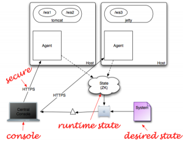
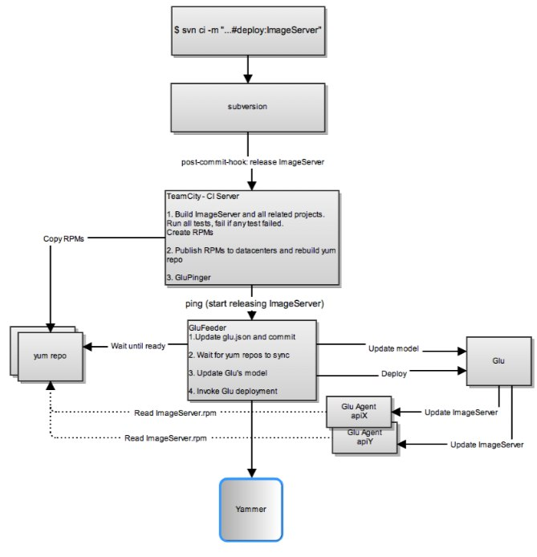

Warning: very long but interesting write-up 
It gives me great pleasure that the last project I’ve been working on at outbrain is one with the potential to speed up product development and is at the frontline of many web companies: Continuous Deployment. These are my last days at outbrain (I’ll share more about where I’m headed later) and I feel this is the right time to share my learnings about CD.
Background
For the past few months I’ve been hard at work on continuous deployment at outbrain. Initial inception of this project started about a year and a half ago when I was starting to get the feel that “things are moving just too slow”. Maybe for desktop or other kind of apps a slow dev process is right, but since Outbrain is a web service, it just felt it didn’t need to be this way (and recently, Google’s Chrome team have made their release process public which shows that even for desktop apps it can be faster).
What doesn’t need to be this way? What am I talking about? – I would implement a feature, write complete unit tests, all went well but then I had to wait. I had to wait for the next release cycle which was usually a few weeks ahead. During this release cycle, QA would go through my new feature or bug fix and sometimes would reject it or just have a different take on my solution. Then, when my head is several weeks older and completely drained elsewhere, I would have to stop the world, fix what needs to be fixed and return to QA, then, if all went well, it would usually take another week or two until the feature is fully public to users, and this is where real feedback starts to show, then I may realize that I’ve spent 90% of my time on things that don’t matter. I would constantly switch context between projects and features due to this few-weeks gap between feature development and feature-meets-the-users. Context switches are expensive, even for humans.
Outbrain is not the only company struggling with this. As a matter of fact, at the time, outbrain was one of the luckiest to employ only a few-weeks release cycle, while others employ months, sometimes even a year. Yes, even internet companies, large internet companies, would stall for a whole year before releasing something, been there…
It was about a year and a half ago that I was starting to poke my manager, hey, why do *I* need to wait in line like the rest of my team? I trust my code, it’s ready! Does it really make sense for my new cool feature to be bundled with other cool features just because we decided to roll on release cycles? Those features have nothing else to do with each other except for the fact that they were decided to be worked on by two different individuals but roughly at the same timeframe. And worse, why do I need to wait and sync with other features, even if they delay, why do I need to delay my own features which are, again, completely unrelated and don’t depend on them, just because other features are more heavyweights? And why do I need to rush my heavyweight feature even when it’s not yet ready, just to make it on time for a release cycle so that other folks are not delayed? And why do we have to fear the “release-day” and eat pizzas for a few days-nights? Releases should be fun, not a nightmare. And as Kent Beck has put it, “It’s easy to mistakenly spill a bucket, we should use a hose of features, not carry buckets of them” (my wording, his idea).
Those kind of thoughts were circling not only my head, and not only outbrain. As a matter of fact, outbrain is a bit (very) late on the continuous deployment train and we’ve had other companies we were lucky to be learning from. Companies such as WealthFront with my friend Eishay, flickr, etsy and others have successfully implemented their own take on continuous deployment aligned with devops, which is a different concept but in my mind related. At the beginning, to me it was clear that something is wrong at how we do things, but getting everyone aboard the mission to fix “it” was about a year of work… It’s not that I had the full solution right up front, admittedly, for the past year I’ve been experimenting with different ad-hoc solutions, plus, our company, like any other company, had to invest not only in engineering best practices but also in, well… in its business, so frankly most of the time I was hard at work doing the business and not doing infrastructure. But at some point, after heaving read some inspirational posts from other companies, after having met with a few developers from those companies, it was decided, outbrain is on board for continuous deployment and I was happy to be one of the core drivers of both the decision and the implementation.
Looking back at where we were a year ago (this doesn’t have to take a year, by the way, I was doing many other things at the same time), I would never want to go back there. Slow and lengthy release cycles, sleepless nights at the point of release, unpredictable release dates and delays beyond your control, all these were not doing good to the good but potentially fragile relationship between product, dev and ops. Add to that a fast growing business with daily firefighting, engineering challenges of ever-growing scale and business direction that isn’t always clear to a company this age. However, even given all this pain, at that time it wasn’t always easy to get everyone on board at investing a few months of man hour, completely changing our engineering, QA and operations culture, and doing something that only a few companies in the world had succeeded in, and it was not yet clear that *we* are going to succeed in. As a matter of fact, even today, even though most folks are on board, there’s still work to do (AKA culture)
When it finally happened, and a formal decision to “go for it” was imminent, a few of us were already “doing it”. Doing it meant, first write a whole lot of tests, which is obviously a good practice, regardless of continuous deployment, but is absolutely necessary for a successful continuous deployment scheme, releasing new features or bug fixes right out of trunk, even though the rest of the team was still working in release branches, some of us have just decided that this is silly and we’re not going to play game, and some limited deployment automation and live systems validation (“testing production” rather then testing a staging or test environment). There was still a long way to go but the cultural shift had already begun and and culture is one of the corner stones.
It’s funny, it seems like with Continuous Deployment, we’re all getting back to high-school again; a few are “doing it”, some even perform well, some only say that they’re doing it but they really aren’t and those who don’t do it, never mention this unless they get asked.
The Goal
The goal was to make deployments easy and safe so that new dev-to-user-feedback loop is as small as possible.
We want to be able to move the product fast, so we don’t want to spend all day monitoring ongoing deployments or triggering them, we want to spend the time writing features, not fighting fires so we need a robust system that we can depend on. To refine this we’ve put ourselves to the following list of goals from the continuous deployment system:
- Easy. One button to rule them all, or one simple commit, or one simple script that you have to fire and forget.
- Safe. Things would fail, all the time, that’s expected. Sometimes it’s your fault but many times it’s just the hardware or someone else’s fault, but either way, you have to deal with it. The goal was for the system to be safe which means that it does everything that’s in its power to validate that the system is stable, if need be, rollback to a previous version, and alert the heck out of everyone when/if something went wrong.
- Automated, as much as possible. Automate DB schemas update, automate monitoring, automate service upgrades, automate infrastructure, automate all. This is a derivative of the first two but worth mentioning.
- Be able to deploy any outbrain service to any subset of servers (choose by staging, all, one DC, two, 50% etc).
The Tech
With the current system that we’ve built a developer is able to commit code and soon thereafter his new code is deployed to all production servers and meets users. The developer can choose whether she wants to release to a restricted set of staging servers or to the complete set of all servers. Everything is completely automated, a simple $ svn ci command would start things off and there you go, a few minutes later (sometimes an hour later), depends on the speed of the moving parts, but with absolutely zero manual intervension, the new service is fully deployed to the eyes of the users.
We are still far from the dream-solution we want to have in place, however, I think what we have acomplished so far already enables us iterate significantly faster on the product.
The Core Components
The core components, as we’ve so far determined, are part cultural, part technical, e.g. tools. Some ppl ask me what’s more important, culture or the tools and I say (and I didn’t make this up) that culture is more important but tools help make the right culture. For example, if you look at code reviews (we use reviewboard, BTW) then just saying Code reviews are great or Code reviews are obligatory isn’t going to help when you don’t have the supporting tools to make code review fun.
The core components are:
Trunk Stable
When I was at youtube I was told that everything I commit to trunk may, at any time, possibly 5min later, go live to a few hundreds of millions users. Imagine that. At the time youtube was not employing continuous deployment per-se but the culture was there. Every developer knew that every commit to trunk counts and may be seen by users at any given time, even after the committer has left the office. Usually code pushes went out once a week but there were emergency pushes almost daily. At first a few skepticals thought that this might slow things down, that everyone would be terrified to commit code, but as it turned out, quite the opposite happened, things just moved faster as folks would still commit code regularly to trunk (and with care, as they should) but they did not have to burn so much time on backporting or forward porting to branches, if you’ve ever used subversion for that then you know what I mean. (of course git makes merges a hell of a lot easier)
At outbrain we’ve decided to go trunk-only a few months ago. This, together with a well established automated testing culture and with live service validation is one of the main cultural pillars of CD.
Trunk stable means a few things:
- As the name suggests, trunk should always be stable and ready for production. Needless to say, never commit a code that does not compile, never commit a code that fails automated testing, never commit something you don’t want users to see. Keep in mind that sometimes even if it’s not you releasing your service, someone else might.
- Everyone works on trunk. There are no release branches (tags are OK), no need to merge code, no need to commit twice.
- Commit often, commit small. Never keep your edits more than one day, preferably no more than one hour, always commit them as soon as they are ready. Commits should be as small as possible, the smallest atomic unit (that compiles, passes tests and does not intimidate users).
- Use feature flags. If you have code that’s not ready to see users yet (this sometimes happen although we try to set that to a minimum), then use feature flags to hide your code. A flag can be passed over from a user (internal user) in the URL for example &enableFeatureX=true or set on a service properties file in a staging environment for example. The idea is to use as little as possible feature flags b/c conceptually they are like branches and they make things complicated. As soon as the feature is fully released, remove the flag from the entire source tree to clean up the code.
Trunk stable is something many companies do and is not special to continuous deployment neither to outbrain. But this is IMO one of the required steps and a big cultural change towards CD.
Automated Testing
This is the second, but actually the most important pillar. Automated testing and testing infrastructure are at the heart of every software organization that respects the profession and far better experts have produced extensive writeups on the subject, so I will refrain from delving into any details here. I will just very shortly describe the motivation and how we use automated testing.
For one, if you release something every 5, 10, 15 or 60 minutes, even once a day, you cannot afford to have someone-in-the-middle, any kind of manual process is unacceptable and will just kill speed of the process. Some things cannot be automoatically tested, for example if you add a new feature you should do your usability homework, but that aside, 99% of the features, bug fixes and code can and should be completely automatically tested. I’m saying that heavy hearted b/c admittedly at outbrain we do not excel in it. Our tests do not have sufficient coverage nor are they sufficiently reliable (some tests “randomly” fail, or even worse, “randomly” pass). However, we’ve decided to embark the CD train nevertheless and fix this technical debt as we go.
Tests need to be fast. If you release every couple of weeks then it doesn’t hurt anyone that the entire test suite takes 1h to run. If you deploy a few times a day you’ll be losing your patience and your deployment queue would get overloaded. A few minutes (we are down to 5) would be a reasonable time for a good test cycle.
Monitoring, self-test and service instrumentation
We deploy fast, it’s easy and we deploy many times a day, but we do not deploy recklessly. We want to make sure that during/after deployments the system is stable and it stays stable. We did not make this up, most of the things I’ve learned again from my friend Eishay at WealthFront.
We instrument the services such that a service call say “I’m OK”. we have a version page which lists all versions of the service’s libraries, a selftest page which, when invoked runs a list of internal tests (talk to a DB, talk to another service etc) and returns a success status. We need to add a perf page that tells us how’s the performance looking at the server right now and more instrumentation is welcome.
The deployment tool, right after deploying the new version would check the service’s selftest page and will continue to the next server in the cluster only if that test passes. We do not have automated rollbacks yet, but this is planned.
Infrastructure Automation with Chef
When we set out to do CD there was a preliminary step we had to take – infrastructure automation. Infrastructure automation is one of the things that will make your ops guys really happy (well, if done right…). Outbrain is probably the last on the train of infrastructure automation, indeed we were very late to that, but finally we’re here. I wouldn’t say it’s completely required for CD per-se but I would argue that it’s completely required for any web shop that manages a non-trivial set of services and those shops happen to be the ones that also look at CD, so the correlation is pretty high. Plus there’s another thing, clulture is here again, if you want your team thinking about constant deployments and always being ready to go live (and actually doing it), you better have your ops team aligned to that as well. Infrastructure automation makes this message clear, in one commit or one button push you have an entire datacenter ready for operatration.
We’ve looked at a few tools and finally chose Chef. I think Puppet isn’t bad either but we never gave it a serious try.
I must say that at the beginnig, choosing the tool for infrastructure automation was something that we (and I personally) put a lot of time into, it was a time sink. I was looking for a tool that would do everything, that would automate both infrastructure and application deployments. For example, a tool that would install tomcat and would also install it’s webapps while at the same time configure its monitoring on opennms (we’re moving to nagios now). Now, there are some tools that do it, as a matter of fact, most tools that I’ve seen could do it all, one way or the other, that’s why it was so confusing b/c they all could do it, but each one had its own nuance and preferences and some were better at infrastructure automation, others were better at application-level deployments and I was looking for the perfect tool that does both. I’ve looked at Chef, cfengine, puppet, ControlTier (horrible, sorry), and a few others. Finally I’ve decided that I’m going to use two different tools, Chef for infrastructure and Glu for applications.
Deployments with Glu
Glu is a young tool, not for the faint of heart. Glu was developed at linkedin and was outsources just a few weeks ago. I think outbrain is the first “customer” outside of linkedin, that is to judge by the relative number of my posts on the support forum…
Glu is a deployment tool, conceptually it works somewhat similar to chef or puppet but to me it seemed more convenient as a product deployment tool. With glu and its nice API it’s easy to create a (json) model that describes your deployment scheme, create an execution plan to update the servers and execute it either in parallel or in sequence. With its API it’s also possible to create even more complex deployment scenarios such as Exponential or any other that you like.
The following diagram, taken from glu’s overview page describes its core architecture.

Glu requires an agent to be deployed on all of the target hosts and a web console. The agents report their status to a zookeeper and the console gets its input both from ZK and from the user/API. The console then lets you Define a Model which tells it which service is deployed where and then execute an update which will install or upgrade the service according to the reports generated by its agents and saved into ZK.
We use both glu’s API for automated deployments and its web console to monitor its progress or to perform ad-hoc deployments. More on that in the next section.
Servicisation – Componentization
One of the core principles in software development (and math, and chemistry, and…) is breaking a problem to smaller parts to solve it. No news here, so why do I bother mentioning that?
When you release often you want to make sure that:
- If you caused a damage, the damage is contained, it’s the smallest damage possible
- If there is an error it’s easy to find where it is and what caused it. Smaller services and smaller releases make that an easier problem.
- If you need a rollback, it’s easy to do so. The smaller the roll-forward the easier the rollback is.
- There’s always more than one instance of any type of services so that when you take one down the system is still functioning.
Breaking your services to small parts makes CD much easier.
The Deployment Pipeline
In this section I’ll describe the system we’ve built. We don’t think this is the best of breed and we have like 20 other features or shortcomings we have on our todo list but I thought it’d still be helpful to read how it works.
What I describe here is just product deployments, not infrastructure automation. Simply, you write your code, test it, then you want users to see it. The assumption is that all databases are already in place, configuration is in place, application servers are in place, all you need to do is deploy new bits.

Here’s an explanation of the flow:
- A developer edits some source files, completes a feature or a bug fix, writes tests and commit with the message “Fixing bug x #deploy:MyService #to:staging”
- The #deploy has the module name to deploy. It may contain a list of modules, such as #deploy:ImageServer,RecommendationEngine
- The #to describes a set of tags for the services to be deployed. For example: #to:staging (staging environment) or #to:my_host (just one host, every hosts are tagged with their host name) or #to:ny,asia (deploy to both the NY datacenter and asia datacenter)
- When the commit is done a subversion post-commit hook is run and extracts the #to and #deploy parameters from the commit. It discards all commits that don’t have #deploy and those that do have #deploy are sent to the CI server
- The CI server (we use TeamCity, nice UI but a miserable API) builds the module and all modules it depends on (we use maven so dependency management is a breeze) and creates RPMs. RPMs are RedHat/CentOS/Fedora’s standard packages. RPMs are nice since they let you easily query the host, once its installed for the current version and with the help of yum they make version control easy. When the build passes including all the tests:
- The RPMs are copied to the yum repositories and
- The repositories are asked to rebuild their index.
- Then, the last step of the build pings GluFeeder telling it to release the module and sending the #to tags.
- GluFeeder is the middleman between Glu and outbrain’s system. Glu requires a model file which describes each service and its version. After a #deploy a specific module on specific hosts that matches a certain tag needs to get its version updated. GluFeeder does that, it reads glu’s model file from subversion where we keep it and updates just the parts that need to be updated. GluFeeder follows these steps:
- Read glu.json model file from subversion, select the nodes that match the modules being #deployed and that match the #to tags selection and updates their version
- Commit the file back to subversion
- Wait for yum to be ready. Sometimes it takes yum a little while before the RPMs are fully indexed, so GluFeeder would wait that and poll every 30 seconds. A related project is yummer
- POST the model file to Glu
- Tell glu to update all the new modules that were just posted.
- Post an update to yammer to let everyone know that a release is in process
- Glu now takes command and starts a sequential release to all the nodes that need to be updated. This is the last step in the process and if it was successful the release is done.
- Glu’s agents install the new RPMs which in most cases contain a WAR file and restart the tomcat web server.
- They then wait for tomcat to be ready (polling) and check the new app’s version page to make sure that it was property deployed and that the context was brought up
- They then access the self-test URL to make sure that the service is well functioning.
- When all tests passed an agent is done so it tells the glu console that it’s finished successfully and the console continues to the next. If one of the tests would fail, the deployment immediately stops.
- An agent would also set a timer to test the self-test every 5 minutes from now on so that we know that the service is still alive.
The first thing to note is that We Are Not Done. As a matter of fact, outbrain has just started. The current system is still pretty much barebones and there are numerous improvements and plenty of love it still deserves. Like any web product, this product is not done and will probably be never done, unless it’s dead… However, it does give us a pretty good start since now there’s a framework, the basic features are there and the deployments are already *so much easier*.
This whole process takes a variable amount of time, something between 10 minutes to 1 hour. The reason for most of the delays is the size of the RPM files and their transfer time. They are about 70M, and their size is mostly influenced by the large number of 3rd party jar files embedded in the WAR. This doesn’t have to be this way and we need to fix it. There are a few possible fixes and we will probably use a combination of all of them, one is just remove all the unneeded dependencies, another is better componentization. But by far the most effective way is to copy only what we need to copy, do not include all the 3rd party or even outbrain’s own jars if they haven’t changed. This is possible and can be embedded in the RPM script, but it’s out of scope for this writeup.
Another place for improvement is the build time and quality. Our tests run much too long, they don’t have enough coverage and they sometimes fail “randomly”, e.g. depending on some external unclean state such as a database. As a matter of fact the mere fact that they actually use a database is a pain, not to mention that it causes slowness and severely degrades reliability. There’s much work to do on the testing front.
We would like glu to tell us if/when something went wrong with a deployment. We want bells to ring and alarms to go off. Currently to the best of my knowledge there is a way to do this through glu’s (nice) API, we just didn’t do it yet. It’d also be nice if glu supported something like that out of the box. (feature request was posted)
What we did not implement yet is a service publishing mechanism whereby a service, when it goes down would unpublish itself by telling its users (other internal services) that it’s going down and then republish itself when going back up. Currently we use a load balancer for that (HAProxy) which sort of makes this work. The proxy would know that if a certain box gives too many errors it needs to go out of the pool but the downside of that is that, first, there will be errors and you’d get dirty logs and perhaps some suffering users b/c at least the first request would be erroneous and second, it takes some time for the proxy to take action. This can be improved by synchronous service publishing whereby a service announces itself as up/down in a shared storage such as zookeeper (and of course that’s not the only way).
Reliability wise we can do a lot more. We use the self-test hook which is a good start but there’s so much more that can be done. For example, since we already have a client on each host then it’s relatively easy to monitor the logs and search for ERRORs of Exceptions. Another thing we ought to do is monitor the KPIs (Key Performance Indicators) in an automated way so that we know that if a certain release has degraded the quality of our serving then we need to roll it back. and figure out a fix for that.
Automated rollbacks is also something we did not do yet. Glu does not support this out of the box (feature request submitted), but it can be done with its API. Currently, to roll back a release takes a few mouse clicks so it’s not that hard which is a good thing but it would even be nicer if a complete and atomic plan existed in glu such that if a release breaks in the middle then an automated rollback is employed.
Overall, even with all the points we’ve written down for improvement, we’re very happy with the system as it is right now since streamlines the deployment process, saves a lot of developer time and makes it much more robust than it used to be.


{kind=link}
{kind=link}
{kind=link}
{kind=link}
{kind=link}
{kind=link}
{kind=link}
{kind=link}
{kind=link}
{kind=link}
{kind=link}
{kind=link}
{kind=link}
{kind=link}
{kind=link}
{kind=link}
{kind=link}
{kind=link}
{kind=link}
{kind=link}
{kind=link}